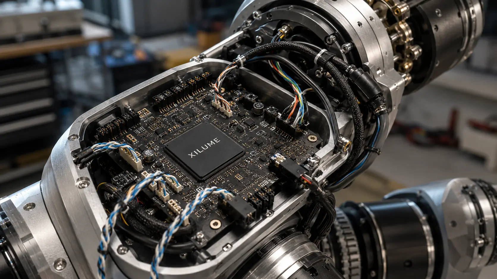
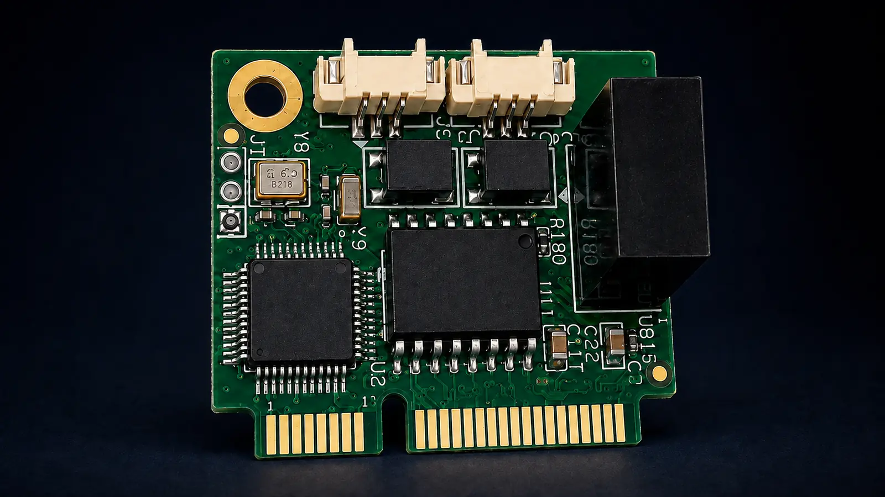

Independent channels
Operate two CAN or CAN FD networks with separate traffic and configuration.

Two independent CAN and CAN FD channels for embedded computers, robotics, and industrial equipment.

KEY FEATURES
Operate two CAN or CAN FD networks with separate traffic and configuration.
Supports CAN FD data-phase rates up to 8 Mbps.
Pairs the controller function with Windows and Linux host drivers.
INTERFACE MAP
LX32F27 manages the host protocol and both CAN controllers. The customer PCB supplies two CAN FD transceivers and the required power, protection, and bus connections.

APPLICATIONS
DESIGN RESOURCES
LX32F27